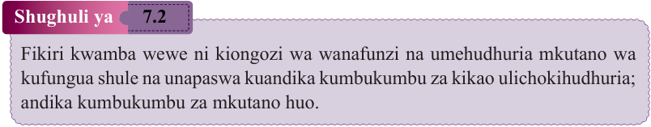
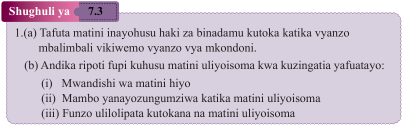

Zoezi la 7.2
Sikiliza hotuba mojawapo ya Baba wa Taifa, Hayati Mwalimu Julius Kambarage Nyerere kutoka vyanzo mbalimbali kisha andika muhtasari wa hotuba hiyo kwa maneno yasiyozidi 100.
Shughuli ya 7.2
Fikiri kwamba wewe ni kiongozi wa wanafunzi na umehudhuria mkutano wa kufungua shule na unapaswa kuandika kumbukumbu za kikao ulichokihudhuria; andika kumbukumbu za mkutano huo.

Shughuli ya 7.3
1.
(a) Tafuta matini inayohusu haki za binadamu kutoka katika vyanzo mbalimbali vikiwemo vyanzo vya mkondoni.
(b) Andika ripoti fupi kuhusu matini uliyoisoma kwa kuzingatia yafuatayo:
-
(i) Mwandishi wa matini hiyo
-
(ii) Mambo yanayozungumziwa katika matini uliyoisoma
-
(iii) Funzo ulilolipata kutokana na matini uliyoisoma
